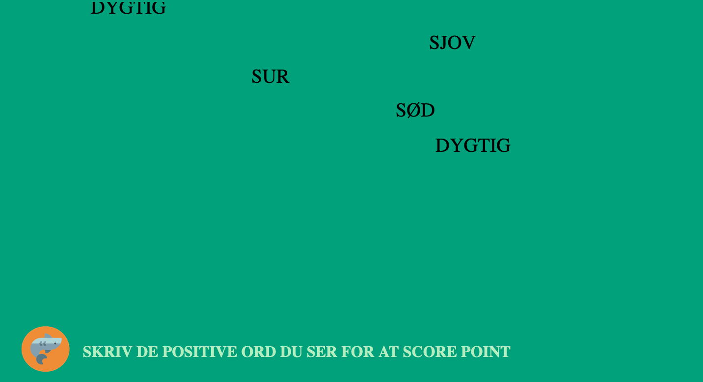

The final project
See and try our final interface in Figma.


The finished game interface
The interface and game structure consists of a starting page for log-on, a homepage where there's a plant that represents the classes scores (see the two illustrations of this), profile page and a joint score page. Only the teacher has access to individual scores and behavior on the platform.You can try to navigate the platform yourself through this link. Or you can see some screenshots of it at the bottom of the front page
We've focused on making in simple and fun for the children to use. We've used knowledge about games through the game theory and also drawn from the knowledge about children, schools and games that we got when doing the semi-structured interview.
The two minigames
 In the game, there is suppose to be many different minigames that the children can play together. This is probably the most important part of the concept, as is it here the children will have to communicate, collaborate and learn to score points together and in this proces gain a better class dynamic.The one game is singleplayer and is about identifying and writing positive words that are falling down the screen. When they write a word they see on the screen correctly, they get points for this. When the game is finished they can send these positive words to their classmates. You can see a screenshot of the game on the right.
The second game is a multiplayer game with four players. The goal of the game is to put every card into
the correct position on the four places you see on the right of the screen. Each player individually get
their own card with a random number on it and is now asked to place it on the position they think it belong.
The numbers range from 1 til 100. The children now have to think a bit logical and statistically - if
they fail, no one gets point and if they succeed they all get joint point for the class to water Ficus.
Ultimately, the children can get diplomas for their team-effort, but all points collected after
playing games on the platform goes to the joint Ficus plant. The plant is a methaphor, and when points
are collected the plant is watered and grows.
You can see the different states of the plant that shows how many points the class have collected down
below. The gif of the watering can shows at the home page when the class has scored points and is
shown with their class name, as to simulate that they're watering it together.